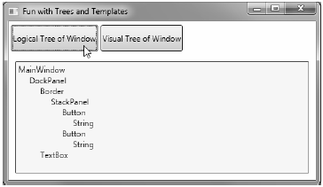
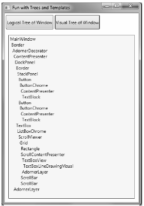
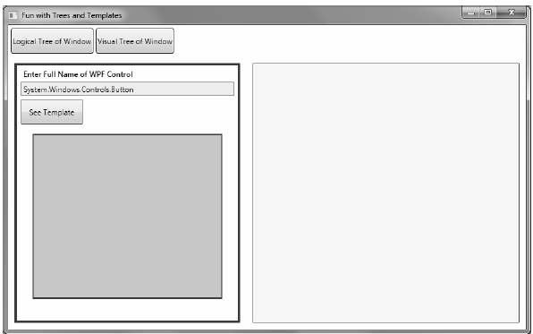
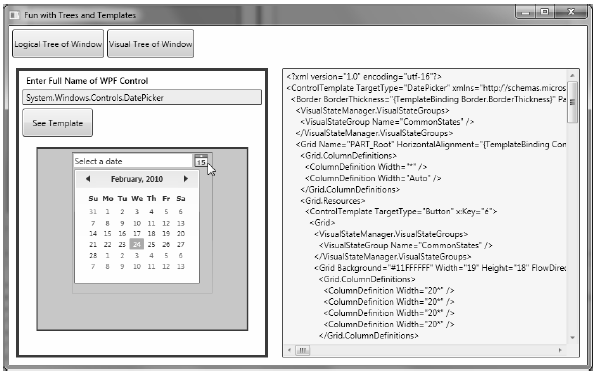

There are a few more preparatory topics to investigate before you begin learning how to build custom controls. Specifically, you need to learn the distinction between a logical tree, a visual tree and a default template. When you are typing XAML into Visual Studio 2010, Expression Blend, or a tool such as kaxaml.exe, your markup is the logical view of the XAML document. As well, if you author C# code that adds new items to a StackPanel control, you are inserting new items into the logical tree. Essentially, a logical view represents how your content will be positioned within the various layout managers for a main Window (or another root element, such as Page or NavigationWindow).
However, behind every logical tree, there is a much more verbose representation termed a visual tree, which is used internally by WPF to correctly render out elements onto the screen. Within any visual tree, there will be full details of the templates and styles used to render out each object, including any necessary drawings, shapes, visuals and animations.
It is useful to understand the distinction between logical and visual trees because when you are building a custom control template, you are essentially replacing all or part of the default visual tree of a control and inserting your own. Therefore, if you want a Button control to be rendered as a star shape, you could define a new star template and plug it into the Button's visual tree. Logically, the Button is still of type Button, and it supports all of the properties, methods and events as expected. But visually, it has taken on a whole new appearance. This fact alone makes WPF an extremely useful API, given that other toolkits would require you to build a brand new class to make a star shaped button. With WPF, you simply need to define new markup.
Note WPF controls are often described as lookless. This refers to the fact that the look and feel of a WPF control is completely independent (and customizable) from its behavior.
While analyzing a window’s logical tree at runtime is not a tremendously common WPF programming activity, it is worth mentioning that the System.Windows namespace defines a class named LogicalTreeHelper which allows you to inspect the structure of a logic tree at runtime. To illustrate the connection between logic trees, visual trees and control templates, create a new WPF Application named TreesAndTemplatesApp.
Update the markup for your window so that it contains two Button controls and a large read-only TextBox with scroll bars enabled. Make sure you use the IDE to handle the Click event of each button. The following XAML will do nicely:
<Window x:Class="TreesAndTemplatesApp.MainWindow" xmlns="http://schemas.microsoft.com/winfx/2006/xaml/presentation" xmlns:x="http://schemas.microsoft.com/winfx/2006/xaml" Title="Fun with Trees and Templates" Height="518" Width="836" WindowStartupLocation="CenterScreen"> <DockPanel LastChildFill="True"> <Border Height="50" DockPanel.Dock="Top" BorderBrush="Blue"> <StackPanel Orientation="Horizontal"> <Button x:Name="btnShowLogicalTree" Content="Logical Tree of Window" Margin="4" BorderBrush="Blue" Height="40" Click="btnShowLogicalTree_Click"/> <Button x:Name="btnShowVisualTree" Content="Visual Tree of Window" BorderBrush="Blue" Height="40" Click="btnShowVisualTree_Click"/> </StackPanel> </Border> <TextBox x:Name="txtDisplayArea" Margin="10" Background="AliceBlue" IsReadOnly="True" BorderBrush="Red" VerticalScrollBarVisibility="Auto" HorizontalScrollBarVisibility="Auto" /> </DockPanel> </Window>
Within your C# code file, define a string member variable named dataToShow. Now, within the Click handler for the btnShowLogicalTree object, call a helper function which calls itself recursively in order to populate the string variable with the logical tree of the Window. To do so, you will call the static GetChildren() method of LogicalTreeHelper. Here is the code:
private void btnShowLogicalTree_Click(object sender, RoutedEventArgs e) { dataToShow = ""; BuildLogicalTree(0, this); this.txtDisplayArea.Text = dataToShow; } void BuildLogicalTree(int depth, object obj) { // Add the type name to the dataToShow member variable. dataToShow += new string(' ', depth) + obj.GetType().Name + "\n"; // If an item is not a DependencyObject, skip it. if (!(obj is DependencyObject)) return; // Make a recursive call for each logical child foreach (object child in LogicalTreeHelper.GetChildren( obj as DependencyObject)) BuildLogicalTree(depth + 5, child); }
If you run your application and click this first button, you will see a tree print out in the text area, which is just about an exact replica of the original XAML (Figure 31-7).
Figure 31-7 Viewing a logical tree at runtime
A Window's visual tree can also be inspected at runtime using the VisualTreeHelper class of System.Windows.Media. Here is a Click implementation of the second Button control (btnShowVisualTree), which performs similar recursive logic to build a textual representation of the visual tree:
private void btnShowVisualTree_Click(object sender, RoutedEventArgs e) { dataToShow = ""; BuildVisualTree(0, this); this.txtDisplayArea.Text = dataToShow; } void BuildVisualTree(int depth, DependencyObject obj) { // Add the type name to the dataToShow member variable. dataToShow += new string(' ', depth) + obj.GetType().Name + "\n"; // Make a recursive call for each visual child for (int i = 0; i < VisualTreeHelper.GetChildrenCount(obj); i++) BuildVisualTree(depth + 1, VisualTreeHelper.GetChild(obj, i)); }
As you can see in Figure 31-8, the visual tree exposes a number of lower-level rendering agents such as ContentPresenter, AdornerDecorator, TextBoxLineDrawingVisual, and so forth.
Figure 31-8 Viewing a visual tree at runtime
Recall that a visual tree is used by WPF to understand how to render a Window and all contained elements. Every WPF control stores its own set of rendering commands within its default template. Programmatically speaking, any template can represented as an instance of the ControlTemplate class. As well, you can obtain a controls default template by using the aptly named Template property:
// Get the default template of the Button. Button myBtn = new Button(); ControlTemplate template = myBtn.Template;
Likewise, you could create a new ControlTemplate object in code and plug it into a control’s Template property:
// Plug in a new template for the button to use. Button myBtn = new Button(); ControlTemplate customTemplate = new ControlTemplate(); // Assume this method adds all the code for a star template MakeStarTemplate(customTemplate); myBtn.Template = customTemplate;
While you could build a new template in code, it is far more common to do so in XAML. In fact, Expression Blend has a large number of tools which can be used to define a template with minimal fuss and bother.
However, before you start building your own templates, let’s finish the current example and add the ability to view the default template of a WPF control at runtime. This can be a really useful way to take a look at the overall composition of a template. First, update the markup of your window with a new StackPanel of controls docked to the left side of the master DockPanel, defined as so:
<Border DockPanel.Dock="Left" Margin="10" BorderBrush="DarkGreen" BorderThickness="4" Width="358"> <StackPanel> <Label Content="Enter Full Name of WPF Control" Width="340" FontWeight="DemiBold" /> <TextBox x:Name="txtFullName" Width="340" BorderBrush="Green" Background="BlanchedAlmond" Height="22" Text="System.Windows.Controls.Button" /> <Button x:Name="btnTemplate" Content="See Template" BorderBrush="Green" Height="40" Width="100" Margin="5" Click="btnTemplate_Click" HorizontalAlignment="Left" /> <Border BorderBrush="DarkGreen" BorderThickness="2" Height="260" Width="301" Margin="10" Background="LightGreen" > <StackPanel x:Name="stackTemplatePanel" /> </Border> </StackPanel> </Border>
Do take note of the empty StackPanel, stackTemplatePanel, as you will refer to it in code. Anyway, your window should now look something like Figure 31-9.
Figure 31-9 The updated UI of your window
The upper left text area allows you to enter in the fully qualified name of a WPF control located the PresentationFramework.dll assembly. Once the library is loaded, you will dynamically create an instance of the object and display it in the large square in the bottom left. Last but not least, the control’s default template will be displayed in the right hand text area. First, add a new member variable to your C# class of type Control:
private Control ctrlToExamine = null;
Here is the remaining code, which will require you to import the System.Reflection, System.Xml and System.Windows.Markup namespaces:
private void btnTemplate_Click(object sender, RoutedEventArgs e) { dataToShow = ""; ShowTemplate(); this.txtDisplayArea.Text = dataToShow; } private void ShowTemplate() { // Remove the control which is currently in the preview area. if (ctrlToExamine != null) stackTemplatePanel.Children.Remove(ctrlToExamine); try { // Load PresentationFramework, and create an instance of the // specified control. Give it a size for display purposes, then add to the // empty StackPanel. Assembly asm = Assembly.Load("PresentationFramework, Version=4.0.0.0," + "Culture=neutral, PublicKeyToken=31bf3856ad364e35"); ctrlToExamine = (Control)asm.CreateInstance(txtFullName.Text); ctrlToExamine.Height = 200; ctrlToExamine.Width = 200; ctrlToExamine.Margin = new Thickness(5); stackTemplatePanel.Children.Add(ctrlToExamine); // Define some XML settings to preserve indentation. XmlWriterSettings xmlSettings = new XmlWriterSettings(); xmlSettings.Indent = true; // Create a StringBuilder to hold the XAML. StringBuilder strBuilder = new StringBuilder(); // Create an XmlWriter based on our settings. XmlWriter xWriter = XmlWriter.Create(strBuilder, xmlSettings); // Now save the XAML into the XmlWriter object based on the ControlTemplate. XamlWriter.Save(ctrlToExamine.Template, xWriter); // Display XAML in the text box. dataToShow = strBuilder.ToString(); } catch (Exception ex) { dataToShow = ex.Message; } }
The bulk of the work is just tinkering with the compiled BAML resource to map it into a XAML string. Figure 31-10 shows your final application in action, displaying the default template of the DatePicker control.
Figure 31-10 Investigating a ControlTemplate at runtime
Great! Hopefully you have a better idea about how logical trees, visual trees, and control templates work together. Now you can spend the remainder of this chapter learning how to build custom templates and user controls.
Source Code The TreesAndTemplatesApp project is included under the Chapter 31 subdirectory.